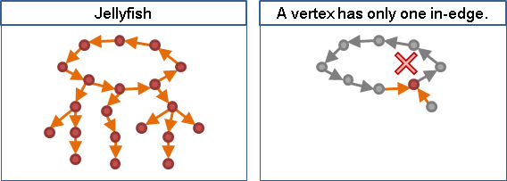
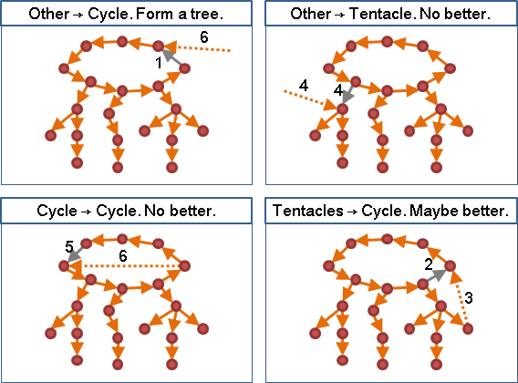
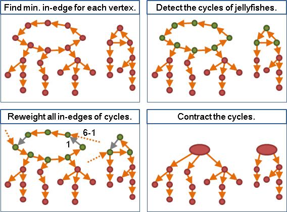
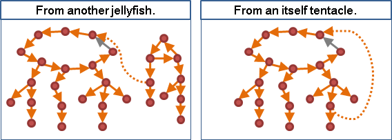

前情提要
直接套用無向圖的演算法，會發現邊的方向亂七八糟，無法形成有向樹。
在無向圖當中，兩棵MST，要合併成一棵MST時，以兩棵MST之間權重最小的邊進行連結，會是最好的。但是在有向圖當中，連接兩棵有向樹，不一定會形成有向樹。
想法
http://www.ce.rit.edu/~sjyeec/dmst.html
生成樹的基本概念是：連接圖上各點的樹。從這個概念下手，引用先前Borůvka's Algorithm的概念，然後考慮邊的方向性，就想到兩個粗糙的演算法：
有向圖上，每一個點，如果要被連接到，都要至少有一條出邊，除了樹葉以外。
每一個點，找權重最小的出邊，會比較好。
有向圖上，每一個點，如果要被連接到，都要剛好有一條入邊，除了樹根以外。
每一個點，找權重最小的入邊，會比較好。
入邊只需要用到一條，樹根也只有一個，所以從入邊下手是比較容易的。樹根是個例外；我們可以暫且假定我們已經知道最小生成樹的樹根是哪個點，就不必顧慮例外，事情就更好辦了。
檢驗想法
緊接著，我們要審視這個想法還有沒有例外。
運氣好的時候，每個點權重最小的入邊，剛好形成一棵生成樹，那麼這一定是最小生成樹。
運氣普通的時候，依照Kruskal's Algorithm的經驗，每個點權重最小的入邊，很有可能形成環。
水母（沒有正式名稱，因為像水母就把它叫做水母）
由於每個點僅有一條入邊，一旦入邊們形成環，此環一定只有多餘出邊，沒有多餘入邊──形成一個像是太陽、或者說是水母的圖。水母可以看做是很多棵樹，然後用一只環串起樹根。

把水母改裝成最小生成樹
每個點權重最小的入邊，一般狀況下可能會形成許多隻水母。最小生成樹不得有環，所以水母是不合格的。
水母是權重最小的連接方式，最小生成樹的權重一定是略高、等高於水母。如此便產生一個策略：嘗試拆除水母的某一條邊，並且更改為另一條邊。雖然很可能增加整體權重，但是也有機會成為最小生成樹了。
一、更改水母腳的邊：
不但增加整體權重，而且水母環仍舊存在。之後沒有更好。
二、更改水母環的邊：
甲、新邊是自身水母環的弦：形成一個更小的水母環。之後沒有更好。
乙、新邊是由自身水母腳連來：形成一個更大的水母環。
丙、新邊是由其他水母連來：自身水母環消失，變成其他水母的腳。

乙、原本水母環上的邊，之後仍可更改，所以先改後改都沒差，所以先行更改整體權重增加最少的邊，一定比較好。
丙、既然水母環會消失，更改整體權重增加最少的邊，顯然比較好。
結論：只需要更改水母環的邊，而且要讓整體權重增加最少。
演算法：給定樹根的有向最小生成樹（Chu-Liu/Edmonds Algorithm）
把進入水母環的邊，全部看過一遍，就能找到權重增加最少的新邊。另外，把看過的新邊，直接修改成權重增加量，並且收縮水母環；如此一來，只要是看過的新邊，就不用看第二遍了，可以降低時間複雜度。
一、刪去所有自己連向自己的邊。
二、移除樹根的全部入邊。
三、判斷樹根能不能連到圖上各個點，否則生成樹不存在。
四、重複以下步驟，直到形成生成樹為止：
甲、每一個點，找出權重最小的入邊。O(E)
乙、找出所有水母。如果沒有水母就表示目前已是最小生成樹。O(V)
丙、調整進入水母環的邊的權重。O(E)
w(a, x) -= w(å, x)，
x是水母環上一點。
åx是x點的最小入邊，也是水母環上的邊。
ax為其他地方連入x點的邊。
丁、收縮水母環成為一點。O(E)

時間複雜度：給定樹根的有向最小生成樹
最糟的情況是每個步驟中剛好產生一直水母環有兩個點的水母，水母環進行收縮後，整張圖只減少一個點。所以最多收縮V-1次水母環。每次皆以Graph Traversal找出每個點的最小入邊，因此整體的時間複雜度為O(VE)。
採用更困難的實作方式，時間複雜度還可以達到O(V^2)、O(ElogV)、O(E+VlogV)。實作方式是一直線地往回找入邊，每當形成環，就調整權重並縮環。粗略的時間複雜度分析如下：
一、每個點最多走一次。O(V)
二、最多縮環V-1次（兩點縮成一點），收縮之後出現的新點，最多走V-1次。O(V)
三、縮環時，環上的點會額外重覆走一次。由一與二可知道是O(2V)。
四、由一可知，每些點對應的入邊，最多都被掃過一次。O(E)
由二可知，每些點對應的入邊，最多都被掃過一次。O(E)
由三可知，也是一樣。O(2E)
五、縮環採用Disjoint-sets Forest，時間複雜度為O(α(E))。
由三可知，可以降低成常數。
實作：給定樹根的有向最小生成樹
O(VE)的實作。
UVa 11183
演算法：有向最小生成樹
一、額外建立一個點，作為樹根。
二、額外建立樹根到圖上各點的邊，權重設定為非常大的值。
三、求出給定樹根的最小生成樹。
如果用到兩條以上的新邊，則生成樹不存在。
無向生成樹 v.s. 有向生成樹
根據Kruskal's Algorithm提到的最小生成樹相連性質，可以知道連接多隻水母，就和連接多棵最小生成樹的道理是一樣的，以權重小的邊來連接是最好的。唯一不同的是，Kruskal's Algorithm一旦發現造成環的邊，就直接捨棄；Chu-Liu/Edmonds Algorithm則是留下造成環的邊（形成水母），並且嘗試各種打開環的方式：有時候增大水母環，有時候兩隻水母連接成為一隻水母。
